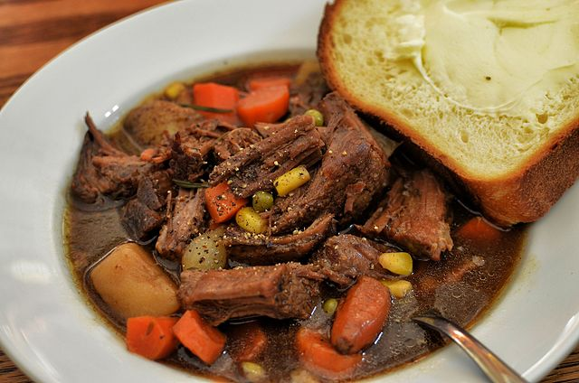

Beef Stroganoff Recipe

Description
Beef Stroganoff, in its simplest form, is simply tender beef with a mushroom and sour cream sauce served over rice or noodles. Although several magazines and cookbooks claim this dish has been served for centuries in Russia, the current accepted history of this dish dates back to the 1890's when a chef working for Count Pavel Alexandrovich Stroganov(the famous Russian general) invented the recipe for a cooking competition in St. Petersburg.
Ingredients
- 1-1/2 lb.(700g) beef tenderloin
- 2 Tbs. butter
- 1 medium onion
- 8 oz.(225g) mushrooms
- 3/4 cup beef broth
- 1 cup(230g) sour cream
Steps
- Thickly slice the mushrooms and finely dice the onions. Cut the beef into thinly against the grain, and then slice into 1 inch(2.5 cm) by 2 inch(5.1 cm) rectangles. Freezing the beef for about an hour and using a sharp knife will make the slicing easier.
- Place a large pot filled with 4 quarts of water over high heat (for the egg noodles). While the water is coming to a boil, place two tablespoons of butter in a large saute pan or skillet (preferably a traditional pan or cast iron, not non-stick) over medium heat.
- Once the butter stops foaming, place the strips of beef onto the hot pan. Try not crowd the pan - most likely you'll need to brown the beef in at least two batches. Once the beef has been laid down on the pan, allow it to brown, about one minute. Once the beef has browned, flip the pieces over and let the other side brown. Remove the beef and repeat as needed to brown all the beef.
- Once all the beef have been browned, place the diced onions in the pan over low heat. Move the onions around a bit to coat evenly in the remaining fat in the pan, then spread out the onions and allow them to cook. The onions will release liquid as they cook down, about four minutes. While the onions are cooking, use a wooden spoon or spatula to scrape the fond off the bottom of the pan and mix into the onions.
- Add the thickly sliced mushrooms to the onions and stir to evenly coat with fat. Add a pinch os salt to the mushrooms. Seasoning with salt at this stage will help the mushrooms release their water faster. Allow the mushrooms to cook, tossing occassionally, until all the liquid evaporates, about 10 minutes.
- Add the beef broth to the pan and turn up the heat to medium or medium-high and allow it to reduce. When reduced, the liquid should coat the back of a spoon (or your mushrooms). This will take about 15 minutes.
- Lower the heat and add the sour cream. Stir the mixture together and bring to a light simmer.
- Add the beef (and any juices that have collected in the plate) to the mixture and stir in. Allow the sauce to simmer, reheating the beef. Do not heat the beef too long, or you could overcook it - about two minutes should do it.
- Serve immediately.
Home